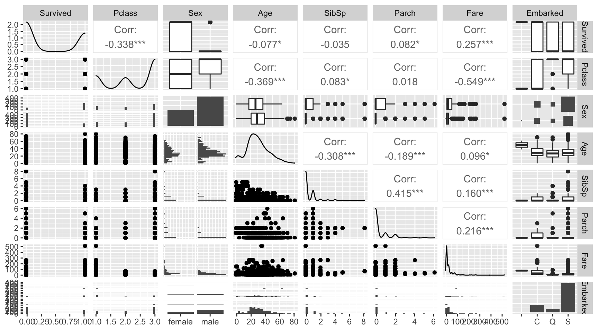
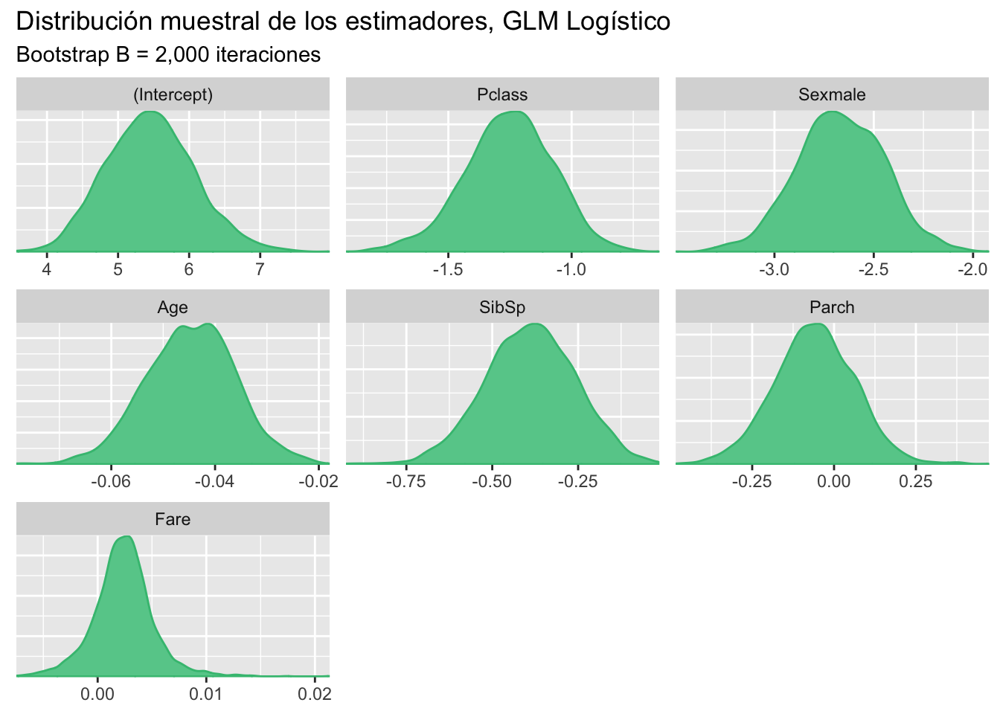
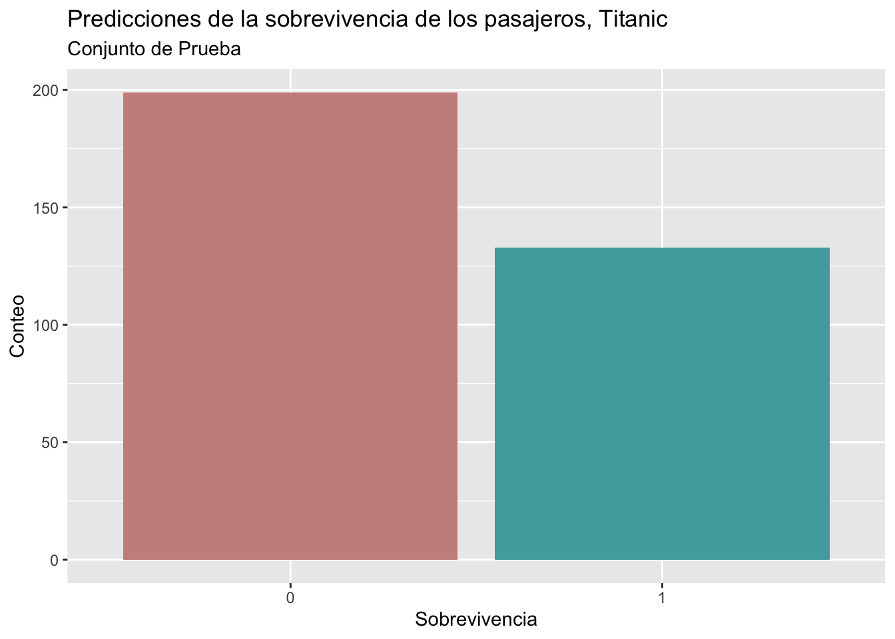

Code
library(caret)
library(GGally)
library(ggplot2)
library(flextable)
library(bayesplot)
library(ggfortify)
bayesplot_theme_set(theme_grey())
load("Titanic.RData")GLMs logísticos
Asael Alonzo Matamoros
November 22, 2022
Este post presenta un análisis la base Titanic usando un modelo lineal generalizado logístico.
El nombre del barco “Titanic” se inspira de los titanes de la mitología Griega, y pese que fue de los cruceros más grandes de su época, se hundió en su primera excursión, ocasionando la muerte de miles de sus tripulantes. Se desea crear un modelo que prediga el número de sobrevivientes en la excursión, para eso utilizaremos los registros de muerte del evento, la base de datos se divide en dos conjuntos
Train: que contiene 891 registros, usado para entrenar los modelos de clasificación.
Test: contiene 418 registros, para corroborar las predicciones del modelo, pero la variable de interés no se encuentra en el conjunto de datos.
La base de datos Train contiene las siguiente variables:
survival: Indica si la sobrevivencia del pasajero. (Dependiente)
pclass: La clase de abordaje en el boleto. (1 = "1st", 2 = '2nd" y 3 = "3rd")
sex: Género de los pasajeros.
Age: Edad en años.
sibsp: número de parientes/esposas a bordo.
parh: número de padres/hijos a bordo.
ticket: número del boleto.
fare: precio del boleto.
cabin: número de cabina.
embarked: Puerto de embarcación. C = Chersbourg, Q = Queenstown, y S = Southampton.
La variable survival es una variable indicadora que representa si el pasajero abordo sobrevivió el hundimiento del Titanic. Dado que es una v.a. discreta y dicotómica se puede modelar con una distribución de Bernoulli.
y_i \sim Bernoulli(p), \quad y_i = 0,1. \quad \& \quad f(y) = p^y(1-p)^{(1-y)}. Donde p representa la probabilidad de éxito (éxito := 1), que indica que el paciente sobrevivió.
Para este tipo de modelos se utilizan GLMs Logísticos, cuya estructura se presenta en la siguiente ecuación:
y_i \sim \text{Bernoulli}(p_i),\quad g(p) = \text{logit}(p_i), \text{ y } p_i = \frac{1}{1 + e^{-\beta X_i}}. Donde:
g:\mathbb R \to \mathbb R, es la función logit g(x) = \log\left(\frac{p}{1-p}\right).
g^{-1}(x) = \frac{1}{1 + e^{-x}} es la función logística.
X son las covariables.
Finalmente, realizamos un gráfico de correlaciones para identificar las interacciones lineales entre variables.

La Figure 1 es poco informativa debido que múltiples variables, incluida la de interés, son variables discretas. Una forma alternativa de medir la dispersión en v.a.d. es usar gráficos de barras compuestos o gráfico de bombones. Para medir correlación un indicador no paramétrico equivalente, es el coeficiente de Kendall.
Ajustamos el modelo GLM logístico completo que consiste en usar todas las variables, y revisamos el ajuste e inferencia de los parámetros.
m1 = glm(Survived ~ Pclass + Sex + Age + SibSp + Parch + Fare,
data = Train, family = "binomial")
summary(m1)
Call:
glm(formula = Survived ~ Pclass + Sex + Age + SibSp + Parch +
Fare, family = "binomial", data = Train)
Deviance Residuals:
Min 1Q Median 3Q Max
-2.7953 -0.6476 -0.3847 0.6271 2.4433
Coefficients:
Estimate Std. Error z value Pr(>|z|)
(Intercept) 5.389003 0.603734 8.926 < 2e-16 ***
Pclass -1.242249 0.163191 -7.612 2.69e-14 ***
Sexmale -2.634845 0.219609 -11.998 < 2e-16 ***
Age -0.043953 0.008179 -5.374 7.70e-08 ***
SibSp -0.375755 0.127361 -2.950 0.00317 **
Parch -0.061937 0.122925 -0.504 0.61436
Fare 0.002160 0.002493 0.866 0.38627
---
Signif. codes: 0 '***' 0.001 '**' 0.01 '*' 0.05 '.' 0.1 ' ' 1
(Dispersion parameter for binomial family taken to be 1)
Null deviance: 964.52 on 713 degrees of freedom
Residual deviance: 635.81 on 707 degrees of freedom
(177 observations deleted due to missingness)
AIC: 649.81
Number of Fisher Scoring iterations: 5El modelo completo da una impresión con buenos resultados, todas las variables excepto el precio de boletos (Fare) y el número de Padres/hijos (parch) resultaron significativas; pero los residuos no están centrados en cero, por ende no cumplen los supuestos iniciales.
El siguiente código genera una muestra Bootstrap para los parámetros del modelo M_1.
glm_boots = function(dat,B = 1000){
n = dim(dat)[1]
est = NULL
for (i in 1:B) {
si = sample(x = 1:n,size = n,replace = TRUE)
dsi = dat[si,]
mli = glm(Survived ~ Pclass + Sex + Age + SibSp + Parch + Fare,
data = dsi,family = binomial)
ci = as.array(mli$coefficients)
est = rbind(est,ci)
}
# Estética
return(est)
}Obtenemos una muestra Bootstrap para los estimadores \hat \beta de tamaño B = 2,000 repeticiones.
btp = glm_boots(dat = Train,B = 2000)
color_scheme_set("green")
mcmc_dens(btp)+labs(title="Distribución muestral de los estimadores, GLM Logístico",
subtitle ="Bootstrap B = 2,000 iteraciones")
Los intervalos de confianza al 95% son:
x = apply(btp,MARGIN = 2, FUN = quantile, probs = c(0.025,0.5,0.975))
# Estética
x = data.frame( t(x) )
x$pars = c("intercepto","Pclass","Sexmal","Age","SibSp","Parch","Fare")
colnames(x) = c("q2.5%","Median","q97.5%","parámetros")
ft = flextable(x[c(4,1,2,3)])
autofit(ft)parámetros | q2.5% | Median | q97.5% |
intercepto | 4.334260675 | 5.439635093 | 6.745395492 |
Pclass | -1.639020256 | -1.248013748 | -0.920773130 |
Sexmal | -3.103889872 | -2.670659414 | -2.236386690 |
Age | -0.061857970 | -0.044474501 | -0.028015033 |
SibSp | -0.650111165 | -0.388576745 | -0.140536577 |
Parch | -0.308640960 | -0.059430606 | 0.181213922 |
Fare | -0.003236097 | 0.002371131 | 0.008264565 |
La Figure 2 muestra la distribución muestral de los estimadores del modelo, y la Table 1 muestra los intervalos de confianza.El efecto de las variables Fare y Parxh está concentrado en cero, por lo tanto, se deberá considerar un GLM logístico reducido.
Los residuos no son una medida correcta para evaluar el ajuste del modelo. Esto se debe a que el modelo predice de forma continua valores en el intervalo unitario I = [0,1] y los datos son los enteros en la clausura de I. Una forma adecuada de visualizar los residuos es usando la matriz de confusión, esta es una matriz en \mathbb{R}^{2 \times 2} que presenta el ajuste del modelo.
CM = \begin{pmatrix} P & FP\\ FN & N \end{pmatrix} Donde:
P representa los valores predichos correctamente como positivos (1).
N representa los valores predichos correctamente como negativos (0).
FP representan los valores falsos positivos, \hat y = 1 cuando y = 0.
FN representan los valores falsos negativos, \hat y = 0 cuando y = 1.
pred1 = predict(m1,Train[,-c(1:2)],type = "response")
pred1 = ifelse(pred1 > 0.5, 1, 0)
x = table(pred1, Train$Survived)
x = round(prop.table(x)*100,2)
x
pred1 0 1
0 50.98 11.20
1 8.40 29.41Una medida importante es la precisión (“Accuracy”) del modelo, que es el porcentaje de aciertos del modelo. Que se calcula como la suma de las diagonales en la matriz de confusión. El accuracy para el modelo M_1 es:
Para seleccionar el mejor modelo usaremos validación cruzada, 10-fold, esto implica que ajustaremos diez veces cada modelo, evaluando la precisión del modelo. Los modelos que se consideraran son los siguientes:
M_1: Modelo de logístico completo
M_2: Modelo logístico reducido sin la variable Parch.
M_3: Modelo logístico reducido sin variables Parch y Fare.
El siguiente código presenta una función para realizar k-fold-CV para cualquier valor de k. En caso de querer añadir otros modelos o criterios, la función deberá ser modificada.
kfold = function(df,k){
# Generar la particion
kfld = createFolds(df[,1],k = k)
mat = NULL
for (i in 1:k) {
# separar los datos en conjuntos de prueba y entrenamiento
dfE= df[-kfld[[i]],]
dfP = df[kfld[[i]],]
# Ajustar los modelos
m1 = glm(Survived ~ Pclass + Sex + Age + SibSp + Parch + Fare,
data = dfE,family = binomial)
m2 = glm(Survived ~ Pclass + Sex + Age + SibSp + Fare,
data = dfE,family = binomial)
m3 = glm(Survived ~ Pclass + Sex + Age + SibSp,
data = dfE,family = binomial)
p1 = predict(m1,dfP,type = "response")
p1 = ifelse(p1 > 0.5, 1, 0)
p2 = predict(m2,dfP,type = "response")
p2 = ifelse(p2 > 0.5, 1, 0)
p3 = predict(m3,dfP,type = "response")
p3 = ifelse(p3 > 0.5, 1, 0)
Accuracy = c(
sum(diag(round(prop.table(table(p1, dfP[,2]))*100,2))),
sum(diag(round(prop.table(table(p2, dfP[,2]))*100,2))),
sum(diag(round(prop.table(table(p3, dfP[,2]))*100,2)))
)
# Unir los datos
mat = rbind(mat,Accuracy)
}
colnames(mat) = c("M1","M2","M3")
row.names(mat) = NULL
return(mat)
}Table 2 presenta los resultados obtenidos al realizar 10-fold-cv, el modelo M_3 es el que presenta la mejor precisión de los tres modelos evaluados.
rst = kfold(df = na.exclude(Train),k = 10)
x = t(apply(rst,MARGIN = 2,FUN = "quantile",probs = c(0.025,0.5,0.975)))
# Estética
x = data.frame(x)
x$pars = c("M1", "M2", "M3")
colnames(x) = c("q2.5%","Median","q97.5%","Accuracy")
ft = flextable(x[c(4,1,2,3)])
autofit(ft)Accuracy | q2.5% | Median | q97.5% |
M1 | 73.763 | 80.430 | 85.48725 |
M2 | 73.763 | 80.555 | 85.44000 |
M3 | 73.763 | 80.555 | 85.44000 |
Table 2 compara los tres modelos, usando la medida de precisión, y el modelo reducido M_3 tiene resultados ligeramente mejores. Finalmente, se predice en el conjunto de prueba, la Figure 3 presenta las predicciones realizadas por el modelo M_3 para 332 pasajeros, donde la mayoría de ellos no sobreviven al hundimiento del barco.
m3 = glm(Survived ~ Pclass + Sex + Age + SibSp,
data = Train,family = binomial)
p3 = predict(m3,Test,type = "response")
p3 = ifelse(na.exclude(p3) > 0.5, 1, 0)
p3 = data.frame(p3)
ggplot(p3, aes(x=as.factor(p3), fill=as.factor(p3) )) +
geom_bar( ) + scale_fill_hue(c = 40) +
labs(title = "Predicciones de la sobrevivencia de los pasajeros, Titanic",
subtitle = "Conjunto de Prueba",
x = "Sobrevivencia",y = "Conteo")+theme(legend.position="none")